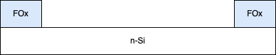
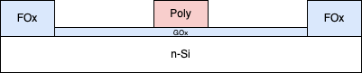
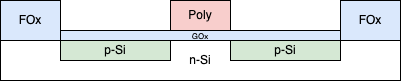
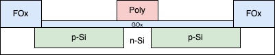
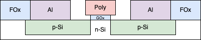

Overview and considerations on transistors. Information taken from a variety of sources.
This page is solely for me to increase my knowledge of transistors to do better at my job. I work as a fab equipment engineer, so understanding the processes and how my equipment can affect them is crucial.
Individual unit processes are covered only enough to adequately explain device operation and performance.
Here is the basic flow of creating a MOSFET. Thicknesses are not exactly to scale, but get the point across comparatively.
Clean the wafer thoroughly to remove any impurities and ensure the substrate (silicon, in most cases) is clean and ready for deposition.
A field oxide is thermally-grown to electrically isolate transistors from one another on the horizontal plane. The middle of the field ox is then etched away to expose the area the transistor will be formed in.
The gate oxide is grown on the exposed area of Si between the field ox. The gate electrode (generally polysilicon). Since there is no convenient way to selectively choose the areas the poly are deposited (special circumstances/tools do exist), this is a blanket depositions, meaning it covers the entire substrate, including field ox.
The gate electrode material is selectively etched everywhere except the gate itself, leaving the entire gate ox and a "block" of poly.
Ion implanation is used to introduce impurities, or dope, the Si areas underneath the gate ox and between the poly and field ox. These areas are called the source and the drain.
The device is then heated to diffuse the impurities deeper—both horizontally and vertically—into the Si.
Conductive contacts now need to be connected to the source and drain. The gate ox is removed, a conductive material (some type of metal) is deposited, then patterned.
The gate oxide is a dielectric layer that separates the substrate and gate electron (often polysilicon), forming a capacitor of-sorts between the two.
Not every gate oxide has to be SiO2. Other materials that are used generally have high \(\kappa\) values (pronounced high-K, the dielectric constant) and includes HfO2, ZrO2, and TiO2, to name a few.